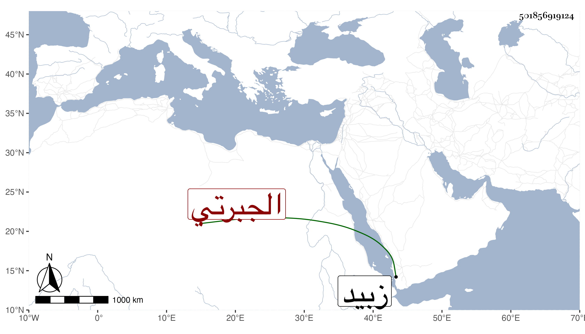

0902Sakhawi.DawLamic.ITO20230111-ara1.EIS1600.501856919124
Biography ID: 501856919124
296
محمد بن أحمد أبو عبد الله الجبرتي . كان فقيها عالما تفقه بالقاضي أحمد بن أبي بكر الناشري وناب عن القاضي موفق الدين في أحكام زبيد فكان الناس إذا علموا أنه القاعد لذلك تحاموه لغلظته . ومات قبل وفاة شيخه المذكور في حدود سنة أربع عشرة .
